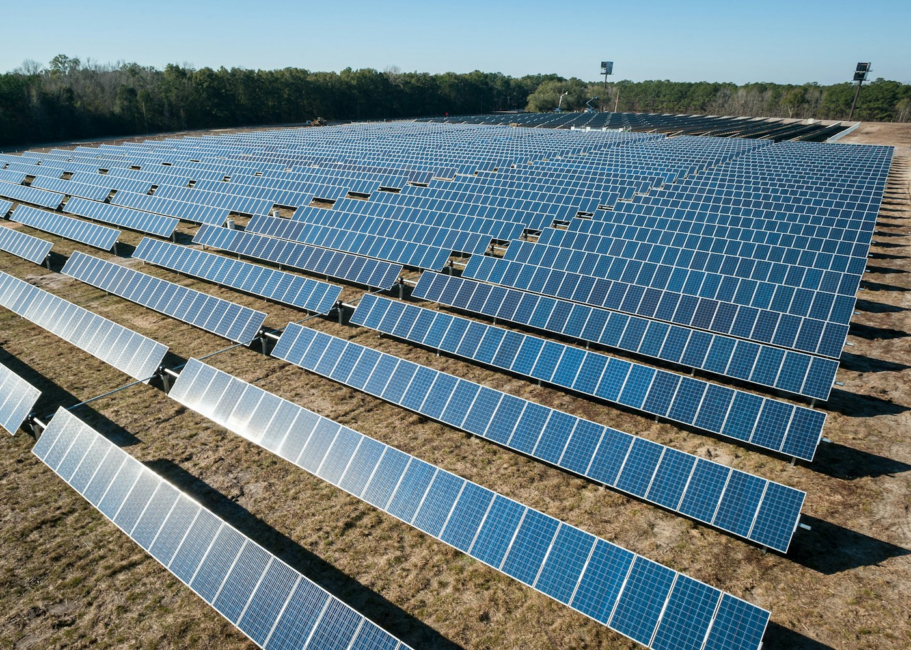
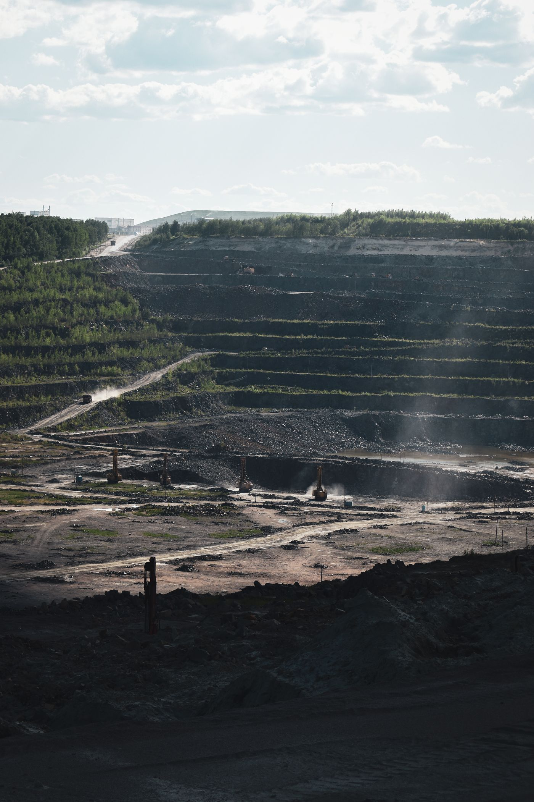
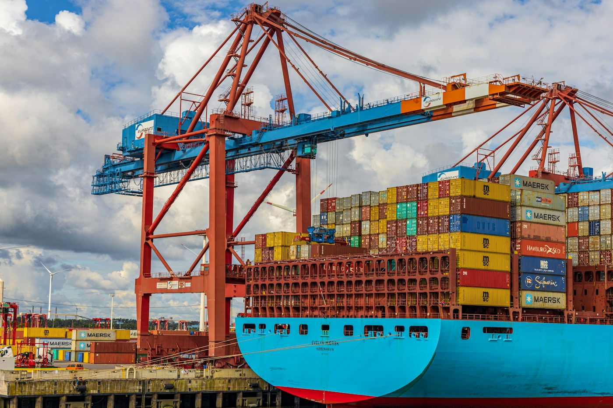

A clearer path to cleaner energy.
Environmental compliance for a proposed solar development.
Inside the project
Map approvals, identify environmental considerations and define monitoring responsibilities before operations begin.
Slindokuhle Biyela — connecting responsible business decisions with a more resilient Africa.
Explore the workLaw with purpose.
Progress with responsibility.
Candidate attorney · LLM candidate, Environmental Law, UKZN
A legal perspective.
A sustainable outlook.
I am a candidate attorney and LLM candidate in Environmental Law at UKZN, with an LLB from the University of South Africa. Before law, I spent eight years in air quality licensing at King Cetshwayo District Municipality and nearly four in ship agency operations.
My work now covers mine closure, water and air quality licensing, environmental authorisation appeals and compliance reporting for energy and industry.
Sustainability is not just an obligation, but a strategic opportunity for Africa’s long-term prosperity.
December 2024 onwards
Exigent · South Africa
Mine closure plan reports, environmental compensation reports for spillages, water and air quality licensing, and compliance reports for energy plants. Appeals on refused environmental authorisations, section 24G applications, and advisory reports to the DFFE on non-compliant industries.
September 2017 – August 2025
King Cetshwayo District Municipality · Richards Bay
Issuing and monitoring air quality compliance licences, conducting inspections and audits, and enforcing regulations and standards.
May 2013 – December 2016
Rennies Ships Agency · South Africa
Vessel reports and files, vessel financial statements, shipping schedules and shipment coordination.
Empangeni, KwaZulu-Natal, South Africa
Across mining, energy, industrial and maritime sectors.
Sample project concepts.
Illustrative work, not client engagements.

Environmental compliance for a proposed solar development.
Map approvals, identify environmental considerations and define monitoring responsibilities before operations begin.

Responsible mine closure and land rehabilitation.
Structure a rehabilitation checklist for restoration, long-term land use and post-closure environmental oversight.

Connecting shipping operations with ESG priorities.
Outline environmental reporting requirements and governance responsibilities across everyday maritime operations.
Sample editorial content for this preview.
Consider environmental requirements early, alongside investment and operational decisions. This illustrative excerpt is not a published article.
Clear accountability connects environmental commitments to everyday business decisions. This illustrative excerpt is not a published article.
Speaking and panel enquiries on environmental law, ESG, Africa’s energy transition and responsible resource development.
Discuss your eventHave a collaboration, speaking enquiry or sustainability project in mind?
info@slindokuhlebiyela.co.za Connect on LinkedIn Empangeni, KwaZulu-Natal, South Africa